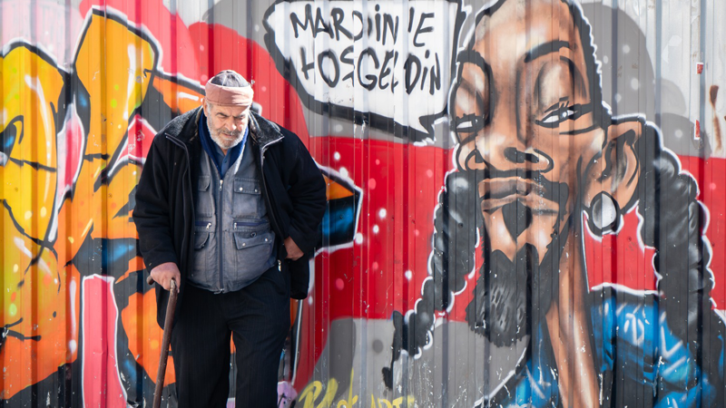

"Hamnet", 16. yüzyılın bir yansıması. Ben filmi birkaç kimliğimle seyrettim; etkilendim, heyecanlandım, duygulandım, öfkelendim ve acıları adeta yaşadım. Kısaca film bana geçti. Şifacı, onaran Agnes; analığı, aşkı, sadakati dimdik ayakta dururken içten yıkılışı hissettirdi bana.
Toplumun ve doğanın ona yüklediği görevleri kendince, zaman zaman çaresizce yerine getirdi. Analık mücadelesi mi, aşkı mı, yoksa yapması gerekenler mi onu doruğa ulaştırdı? Ben filmi seyrederken anneliğimi, evlatlığımı, aşkımı; hissettiklerimi, haksızlıkları, hak ettiklerimi, duygularımı ve gözyaşlarımı sorguladım.
Bu sorgulama süreci, aslında izleyicinin kendi yaşam aynasına bakmasıdır. Film, Agnes üzerinden sadece bir dönemi değil, insan ruhunun en karanlık ve en aydınlık dehlizlerini yeniden keşfetmemizi sağlıyor. Kaybın ağırlığı altında ezilirken, yasın bile bir tutkuya dönüşebileceğini, sevginin ise en büyük şifa olduğunu gösteriyor.
Agnes'in sessiz çığlığı, modern dünyanın gürültüsü içinde kendi sessizliğimizle yüzleşmemize olanak tanıyor. Film sona erdiğinde, üzerimizde kalan o hüzünlü tortu, aslında yaşanmışlıkların ve içimizdeki "Hamnetlerin" bıraktığı izlerden başka bir şey değil. Belki de bizi asıl etkileyen; Agnes'in bir annenin yüreğinde taşıyabileceği en ağır yükü, bir zarafet ve metanetle ölümsüzleştirmesi, ardından da kendi iç dünyasındaki fırtınaları dışarıya tek bir damla gözyaşıyla sığdırmayı başarmasıdır.

Az eşya, çok anlam: Minimalist fotoğrafçılık son dönemlerin en popüler akımlarından biri haline geldi.
Boşluk, sadelik ve dinginlik minimalizmde ön planda. Ünlü fotoğrafçıların işlerini incelediğimiz bu yazıda, minimalist kompozisyon tekniklerini ele alıyoruz.

HTML5 audio elementi sayesinde herhangi bir eklentiye ihtiyaç duymadan radyo yayınlarını web sitenize ekleyebilirsiniz.
Son yapılan araştırmalar gösteriyor ki podcast ve web radyo dinleme oranları her geçen gün katlanıyor. VOM Radyo da bu trendi yakalayarak 7/24 sanat yayını yapmayı hedefliyor.

Günümüz web siteleri responsive olmak zorunda. Bu şablon akıllı telefonlarda bile mükemmel görüntüleniyor.
Mobil cihaz kullanımının masaüstünü geçtiği bu dönemde responsive tasarım bir tercih değil zorunluluktur. VOM Blog olarak tüm cihazlarda kusursuz deneyim sunuyoruz.

Dijital sanat, son yıllarda büyük bir ivme kazandı. Yapay zeka ve NFT'ler sanat dünyasında devrim yaratıyor.
Yapay zeka ile üretilen eserler, NFT pazarları, dijital kolajlar... Sanatın sınırları her geçen gün genişliyor. VOM olarak dijital sanatın öncü isimleriyle söyleşiler yapıyor.

VOM'un yeni albümü HAZİRAN, şiir ve müziği buluşturuyor. Albümde 10 parça yer alıyor.
Şairlerin dizeleri bestelendi. Caz, klasik ve elektronik tınılarla harmanlanan 'Haziran' albümü, dinleyiciyi duygusal bir yolculuğa çıkarıyor. Albüm lansmanı için canlı yayın etkinliğimiz olacak.

Çocukluğumda yaşadığım bazı şeyleri, bu yaşımda tekrar yaşamak, ya da yaşamak demeyeyim, bu yaşımda tekrar karşıma çıkmaları bir tesadüf değil diye düşünüyorum.
1960’lı yıllarda çocukluk, 1970’li yıllarda ise gençlik yaşamış biri olarak, o günlerin kısıtlı imkanlarında, kendi hobilerimizi kendi imkanlarımız dahilinde oluşturmaya çalışırdık. Çünkü, o zamanların vitrinlerinde, genelde babalar memur ya da işçi, anneler ise ev kadınıydı. Gelir belli ve mütevazı idi.
Benim merakım ya da hobim diyelim, fotoğraf çekmekti. Ama bunun için sünnet düğünümde hediye olarak gelen ve hiçbir işe yaramayan iki fotoğraf makinesi dışında, elimde hiçbir şey yoktu. Elimde olmayan birçok materyal ise etrafımda çoktu. Mesela, Eniştemin (halamın eşi), bir iki tane fotoğraf makinesi, amcamın ise sekiz mm kamerası vardı. Benim için bunlara sahip olmak rüya gibi bir şeydi. Ama fotoğraf çekme rüyam, babamın bana aldığı Lubitel2 makinesi ile gerçek oldu. 125 TL’ye alınmış, bir memurun bütçesini fazlasıyla zorlayacak bir harcamaydı. Gerek amcamın sekiz mm kamerası, gerekse eniştemin hem fotoğraf makineleri, hem de 16 mm film oynatma makineleri ile ilgili diğer yazılarımda anlatacağım çok şey olacak…
Bunları özellikle belirtmemin sebebini biraz sonra sanırım ben anlatmış olacağım, sizler de anlamış…
Serde merak, serde geçmişe özlem, serde dönemimde yaşamış insanların vücuda getirdiği eserler olunca, ben kendimi kaybediyorum. İki gün önce de öyle oldu.
Oğlumla Hilmi Nakipoğlu’nun kamera müzesine gittik, Bakırköy’e… Tesadüf ki, müzenin kurucusu o güzel insan da oradaydı. Ayrıca, Beypazarı’ndan gelmiş, Beypazarı’nda buna benzer bir müze kurmak isteyen bir kişi için ön araştırma yapıp, bilgi alan üç değerli insan daha vardı. Beypazarı’nda müze kurmak isteyen kişinin yaklaşık bin adet materyali varmış. Yolları açık olsun.
Müzeyi gezerken birçok şey yaşadım. Ama tüylerimi diken diken eden iki şeyi unutamam. Birincisi, babamın bana memur maaşının önemli bir bölümüyle aldığı Lubitel2 fotoğraf makinesini, diğeri ise merhum Namık Satar’ın (Foto Namık) müzeye bağışladığı fotoğraf makinelerini. Merhum Namık Satar’ın tüylerimi diken diken etmesinin sebebi ise, müzeye bağışladığı fotoğraf makinelerinden biriyle muhtemelen benim ilk vesikalık fotoğrafımı çekmesiydi. Ama hangi makine, onu bilemiyoruz… Bahse konu ettiğim ilk vesikalık fotoğrafım, bu makalemin altında…
Bu yaşanmışlığın benim için en önemli yanı, bunu mesleği fotoğrafçılık ve kameramanlık olan oğlumla birlikte yaşamam…